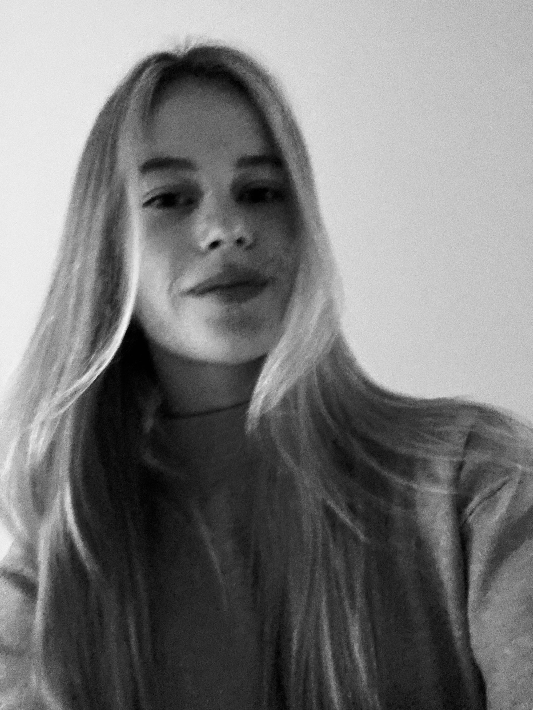

Profiel
Hey, ik ben Inke
Ik ben Vanherck Inke, student digitale vormgeving aan de hogeschool PXL. Ik zou graag willen afstuderen in de design richting. Creativiteit loopt als een rode draad door mijn leven zowel in school als in mijn vrije tijd. Als jonge 20 jarige kan ik nog verder ontdekken hoe krachtig visuele communicatie kan zijn. Deze passie helpt mij om doordachte ontwerpen te maken die niet alleen mooi zijn, maar ook strategisch werken.

Waarom Digitale Vormgeving?
Voor mij is design meer dan alleen "iets moois maken". Het is de perfecte balans tussen creativiteit en strategie. Ik vind het leuk om websites of apps te maken met een touch van mezelf. mijn passie ligt meer bij design dan bij web.
Ik heb het moeilijk gehad om de juiste studierichting te kiezen, maar toen ik digitale vormgeving ontdekte, voelde het meteen goed. Hier kan ik mijn creatieve kant combineren met mijn interesse in visuele communicatie. Na 2 jaar iets anders te hebben gedaan, ben ik blij dat ik deze richting heb gekozen.
Diploma's
Biotechnische wetenschappen
middelbaar
Digitale vormgeving
hogeschool
Werkervaring
Zaalbediende
2025 - nu
Winkelbediende
2019 - 2026
Babysitten
2023 - nu
Skills
- Photoshop
- Illustrator
- UI Design
- Scripting
- Web
Taalvaardigheden
Nederlands is mijn moedertaal. Ik beheers deze taal vloeiend in zowel spreken als schrijven. Daarnaast begrijp ik Engels goed en kan ik mij in deze taal prima redden. Frans heb ik op school gevolgd, waardoor ik een basiskennis van de taal heb.
Nevenactiviteiten
Bal tropical
Lid van SJVK Bal tropical voor chiro Kaulille. Dit is een jaarlijks evenement.
Chiro
Ik heb 10 jaar bij de chiro gezeten als lid en 2 jaar als leiding.
Zwemmen
In mijn vrije tijd ga ik graag zwemmen.